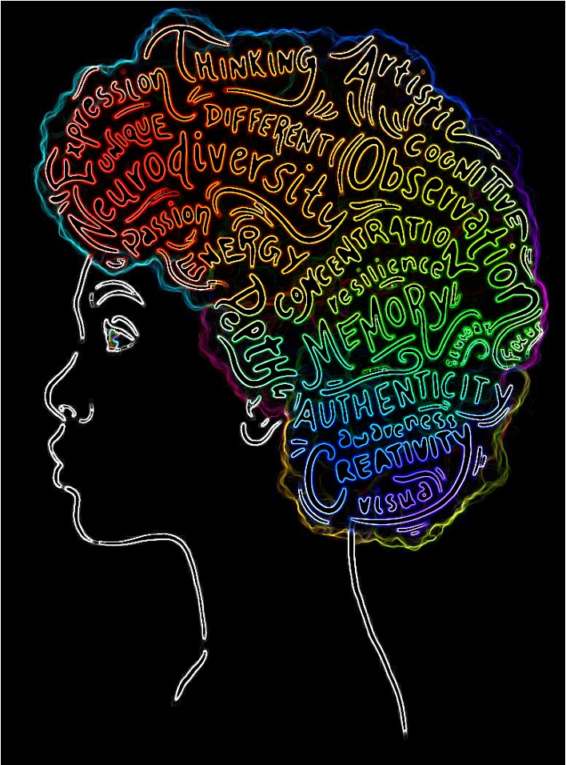
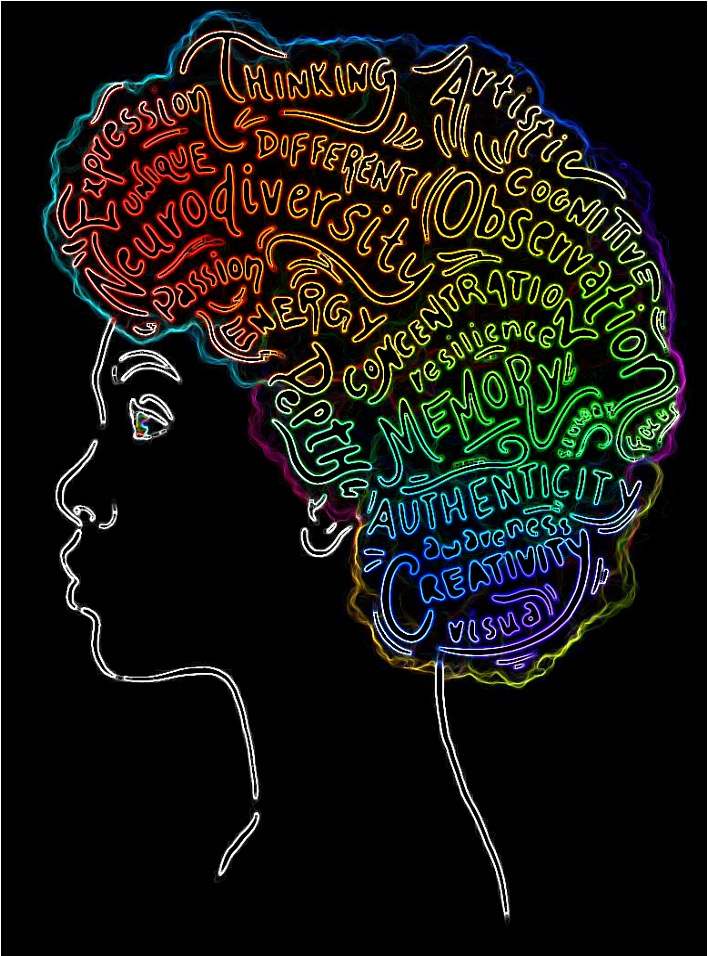

My Neurodiverse world.
Photo credit: GRAPHIC BY TARA VASANTH / THE FLAT HAT
My Neurodiverse world.
Photo credit: GRAPHIC BY TARA VASANTH / THE FLAT HAT
Halfway through getting my BSN (Bachelor of Science in Nursing) I started to question if I was in the career path that best suited the core functions of my personality…. In the midst of introspection, a light bulb moment happened. I remembered that from the age of 6 I had this insatiable curiosity for the mechanics and function of things. I would take them apart, observe the inner workings and try to visually figure out how it all connects and work. It started with toys, then escalated to computers(my mother's)and any type of machinery I could get my hands on. Now in my 30s, I am still the same way, just with more consideration for the cost of things that I tamper with... I also started doing that with humans (to be clear, ONLY through observation and mental analysis), well moreso the psyche of humans. I spent 4 years out of pure boredom and curiosity researching and learning about vthe different branches of psychology as well as various type of pseudo-psychology. With both people and things, I always had one question in mind... What lies inside or at the root of it all? how and why do/does they/it function that way...?
So when it came time to follow my dreams and choose a career that I found stimulating enough to ignite passion within me; software programming was the obvious choice. What's more ROOT-based than programming...? Although, I wasn't completely confident in my new "revelation" I still decided to enroll in my local college SCF coding Academy..
Who am I? Well... as of late, I am a (Full Stack) software engineer who happens to be a neurodivergent black woman embarking in a career field where statistically my gender and race is in large disparity. However daunting the statitics sounded, I never allowed it to damper my enthusiasm, after all 'imposter syndrome' already called dibs. Some might see those “labels” as hinderance when it comes to achieving success, but I believe that being able to be conscious of sociological disparity is not to be taken a as burden nor a crutch, rather as an opportunity to be a part change/growth in whatever capacity. As a software engineer, I hope someday to be a part of bridging the gap in mental healthcare for minorities and lower-incomed communities, via VR. Lastly, I hope to contribute some much needed changes within our monolithic educational system, especially for those kids who learn “differently”. Although, I did the bare minimum in school, I always did fairly well academically in school from grade school to college. The only thing I struggled with academically, was staying mentally stimulated/engaged through lectures/lessons. My brain was in constant battle with how the curriculum was being taught. It refused to retain more than 10% of the materials because unless I knew the "how and why" of a subject, I was utterly uninterested in the "what", I needed depth/context, to be completely engaged...
I read somewhere that to excel in coding one will benefit from having an analytical mind. “This should be a cakewalk” I said to myself, as I walked into the first day of class equipped with newly ignited ambition, extreme naïveté with a touch of Dunning-Kruger effect(a term I recently learned from my instructor lol). First lesson was learning the “basic concepts” of Javascript, which is very ironic because as a new coding student there was nothing basic or conceptual about Javascript. I struggled to retain ANY of what was being taught. For some reason I HAD to first know the literal definition of those new terms, what they were doing and most importantly what was the end goal before my mind recognized it as an information worth processing or storing. After nearly a month of struggling with ‘imposter syndrome” and the need to deep dive every lessons, I finally realized that it is impossible to be able to thoroughly know everything there is to know about programming when it comes to coding sometimes you just have to "do" and learn from error and repetition. I came up with the solution of JUST focusing on the 'what' of the tasks at hand and not worry SO much about the ‘how and why’. As I am getting better acclimated with the concept of programming, it has become a lot easier to taper off my need to over analyze and overthink every single code I write. I doubt that it’s something I can completely get rid of, because when it comes to effiency, being overly-analytical is the only way I know how to be efficient when it comes to work-life.
JavaScript
HTML/CSS
React
Ruby
Rails
Node
SQL


Florida, US
Tools used: VisualCode(VsCode)and w3schools.com